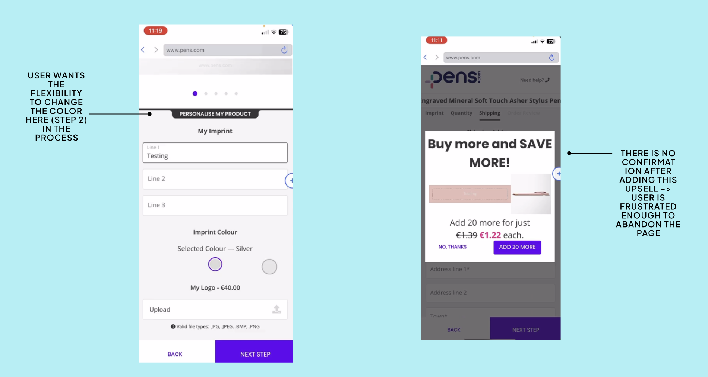

Research first. Then the fix.
Before proposing anything, I needed to understand the full picture. I ran a structured audit across three methods — heuristic evaluation, Hotjar behavioral data, and unmoderated user testing — synthesized through two workshops with the Experimentation Team and Stakeholders. The research pointed in one clear direction: mobile was the critical frontier.
Desktop — One structural flaw
Less friction than mobile overall, but one critical problem: the CTA was buried below the fold. Users who'd finished customization had to scroll past pre-filled information to find the action they came for. A solvable, scoped problem.
Mobile — Compounding friction
A multi-step flow never adapted for mobile. Hotjar showed high abandonment throughout. User testing revealed the specific moments users gave up — and why. Mobile traffic was also growing, making this the higher-impact problem to solve.
Three compounding heuristic violations emerged across the checkout arc — confirmed by both Hotjar behavioral data and direct user observation:



- → "Edit" on order review sends user back 5 steps — no warning
- → Shipping + setup fees hidden until final review — price shock triggers abandonment
- → Upsell modal has no confirmation — users frustrated enough to leave
- → Tab titles read as nav bar — users click expecting navigation
- → Static product preview — users try to zoom in, don't realize it's not interactive
- → Imprint preview appears only after scroll — users don't know it exists
- → Color change locked to step 2 — users want flexibility throughout